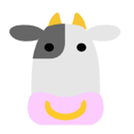
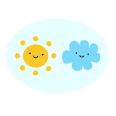

There are 15 questions in this test. 12 is a passing grade. 14 is an A.
You have one hour (30 minutes) to take the test. That gives you a little over 2 minutes for each question.
-
What do Japanese students use as an aid when learning to draw kana?
- 1-square
- 3-lines
- 2-lines
- 4-squares
-
Which of these characteristics does NOT distinguish similar kana?
- Stroke direction
- Stroke angle
- Stroke width
- Hooks/tails
-
Characters like し, ツ,
つ, and ン can best be
distinguished by what shared element?
- A hook
- A wall
- The middle
- The shape
-
Which line is the longest?
-
Which stroke order is correct for そ?
-
Which stroke comes first for ウ?
-
Which of these is pronounced "shi"?
-
Which of these is katakana?
- イ
- り
- つ
- ん
-
Which is the katakana version of そ?
-
What is the same as ん in the other kana?
- リ
- ン
- イ
- ソ
-
IF a Japanese writer was trying to spell the English word "sorry" which would he use?
- ンシ
- んし
- そい
- ソリ
-
Which of these is pronounced "ishi"?
- うし
- ソラ
 イシ
イシ- ソレ
-
Which is the right order and direction of strokes?
-
Japanese has ______ 14 kana?
- At most
- At least
- Exactly
- Less than
-
There are _______ 2000 islands in Japan?
- More than
- Almost
- Nearly
- At most